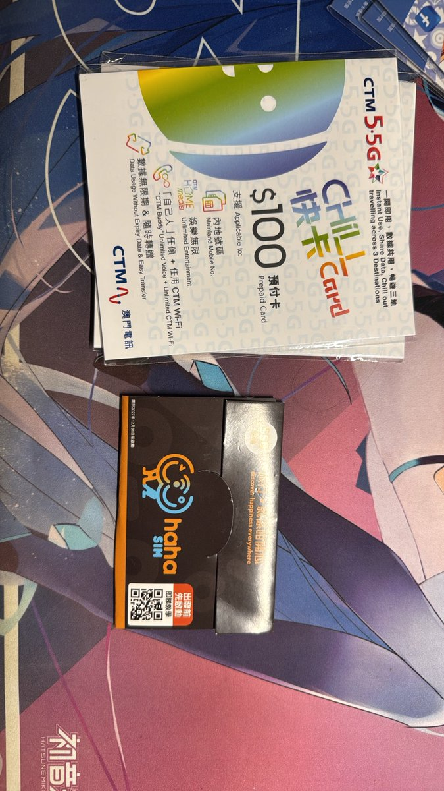

现在的抽奖链接🔗


香港电话卡现货已到
快来买吧
CSL
（橙卡 实体卡 暂不支援转换esim）
70元/张 最晚启用日期为2029.6.30
CSL优势是低廉的保号成本，如果对于短信/接打电话/漫游上网需求量低，可以考虑这个
老版本CTHK大湾区蓝卡
（实体卡 暂不支援转换esim）
无卡套外壳的现惊爆价只需145元/张 https://t.co/dt2b3sy1TP
快来买吧
CSL
（橙卡 实体卡 暂不支援转换esim）
70元/张 最晚启用日期为2029.6.30
CSL优势是低廉的保号成本，如果对于短信/接打电话/漫游上网需求量低，可以考虑这个
老版本CTHK大湾区蓝卡
（实体卡 暂不支援转换esim）
无卡套外壳的现惊爆价只需145元/张 https://t.co/dt2b3sy1TP
【主页抽奖活动进行中】快去引用的推文看一看，会抽取三张香港电话卡
朋友们晚上好，我是知名（？）卡贩子嫣敏，最近收到了很多朋友的提问，大家对于我的商品真是非常的感兴趣，为了更好的帮助朋友们选购产品并更快的获取常见问题解答，我在这里统一说一下
Q1:口令红包怎么发？ https://t.co/jTIjT8ZjPU
朋友们晚上好，我是知名（？）卡贩子嫣敏，最近收到了很多朋友的提问，大家对于我的商品真是非常的感兴趣，为了更好的帮助朋友们选购产品并更快的获取常见问题解答，我在这里统一说一下
Q1:口令红包怎么发？ https://t.co/jTIjT8ZjPU